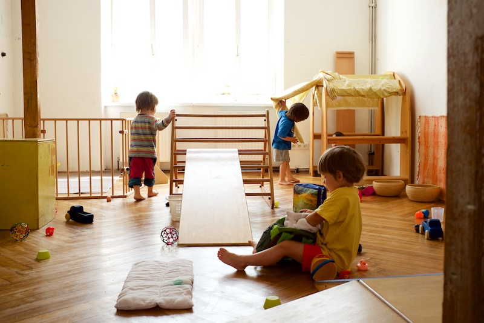

Betreuung als Tagesmutter
Ich bin seit 2007 bei der Volkshilfe als Tagesmutter angestellt und leite als Pikler-Pädagogin eine kleine Gruppe von jeweils fünf Kindern im Alter von 1,5- 3 Jahren.
Meine Betreungszeiten sind Mo-Fr 8-15 Uhr.

Tagesablauf
Unser Tagesablauf umfasst den täglichen Spaziergang auf den Spielplatz, dann in der Wohnung viel Zeit für freies Spiel und Bewegung in vorbereiteter Umgebung. Es herrscht ein achtsamer Umgang beim Wickeln und beim Essen, das Kind wird als gleichwertiger Partner wahrgenommen. Diese Zusammenarbeit, der Kontakt und die sanften Berührungen machen die täglichen Pflegehandlungen zu einem freudigen Zusammentreffen. Die Pflege ist das Herzstück der Pikler-Pädagogik, dieser innige Kontakt beim Wickeln oder Essen ist die Basis dafür, dass freies Spiel oder freie Bewegungsentwicklung überhaupt möglich sind. Die Pflegesituationen halten sich an eine bestimmt Choreographie, die den Freiraum für spontanen Austausch ermöglicht. Nach dem erlebnisreichen Vormittag gibt es noch Zeit für einen Mittagsschlaf.
Anmeldung und freie Plätze
Bis zum Sommer 2020 sind keine freien Plätze verfügbar!
Anmeldungen sind bei mir persönlich jederzeit - je früher desto besser - möglich.
Voraussetzung für einen Betreuungsplatz ist der Besuch meines Pikler-Spielraums im Herbst und im Frühjahr vor dem Betreuungsbeginn.